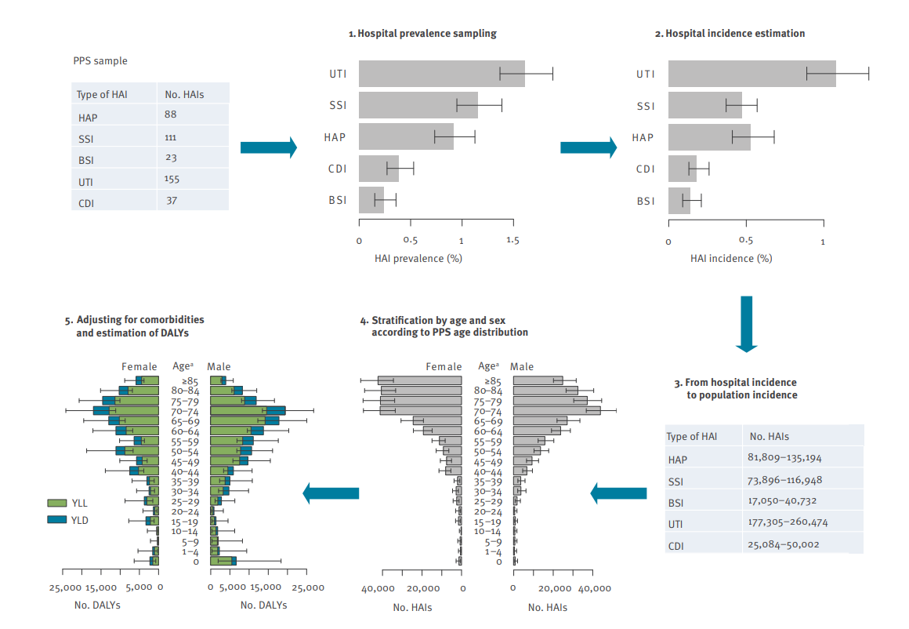
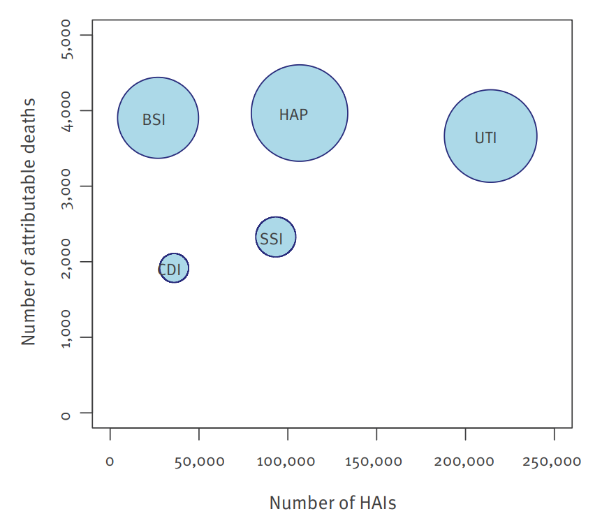
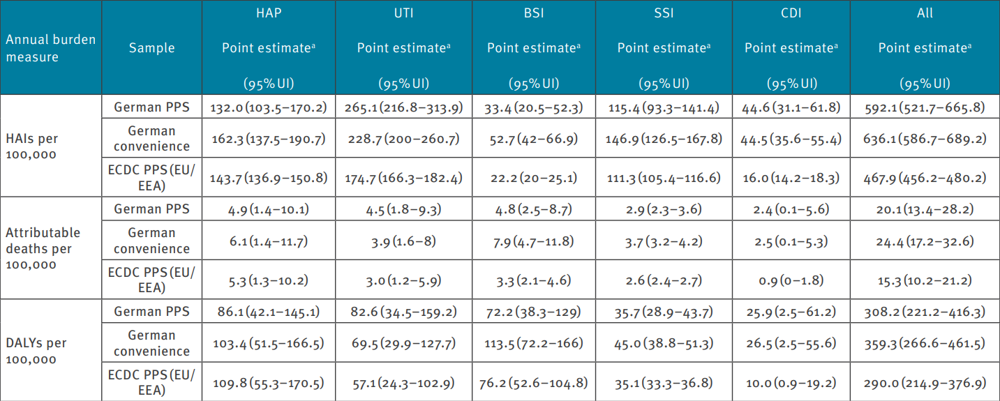
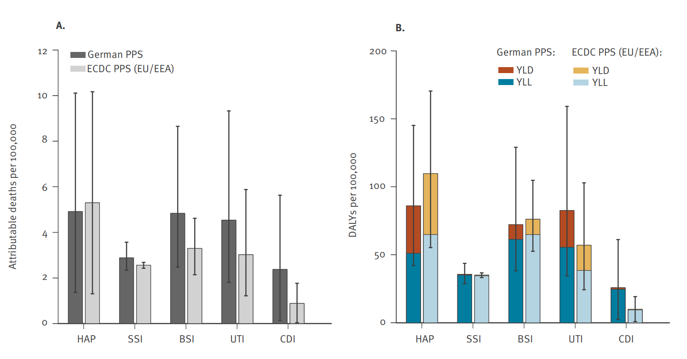
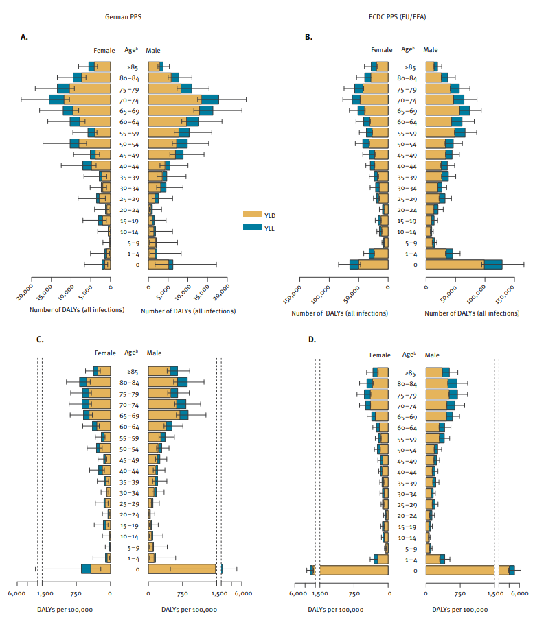

| Term | Meaning |
|---|---|
| HAI | Healthcare-associated infection (acquired in healthcare) |
| PPS | Point-prevalence survey: one-day snapshot across hospitals |
| BHAI | Workflow that turns PPS snapshots into annual burden estimates |
| Attributable deaths | Deaths caused by the infection (not just deaths among infected patients) |
| DALY | Overall burden: disability-adjusted life years = YLL + YLD |
| YLL | Years of life lost due to premature death |
| YLD | Years lived with disability due to illness |
Germany reports a lower on-ward HAI prevalence than the EU/EEA average yet a higher burden per population. This post summarises Zacher et al. (2019): how big the burden is (cases, deaths, DALYs), which HAI types drive it, and why Germany’s per-capita rates end up higher despite lower ward-level prevalence.
Data description
- The analysis draws on estimates produced with the Burden of Healthcare-Associated Infections (BHAI) workflow.
- Data sources: the 2011 German point-prevalence survey (PPS) and the 2011-2012 EU/EEA PPS.
- Download: data and supplementary materials are available from Eurosurveillance, and the datasets plus analysis code used in the paper are bundled with the open-source BHAI R package on CRAN, enabling full reproduction of the Germany and EU/EEA estimates (https://CRAN.R-project.org/package=BHAI).
- HAI types included:
- HAP - healthcare-associated pneumonia
- BSI - primary bloodstream infection
- UTI - urinary tract infection
- SSI - surgical-site infection
- CDI - Clostridioides difficile infection
- HAP - healthcare-associated pneumonia
Table 1 gives a short glossary.
Reporting format: annual estimates; some results shown per 100,000 people; values are medians with 95% uncertainty intervals.
How numbers are produced (see Figure 1):
- Prevalence in hospital from PPS
- Convert to hospital incidence via a modified Rhame-Sudderth formula using length of infection (LOI)
- Scale to population using national hospital discharges and population size
- Stratify by age/sex using the PPS distribution
- Adjust for comorbidity (McCabe classes) and estimate YLL, YLD, and DALYs.

Scale and drivers of Germany’s HAI burden

How big is the problem? In 2011 Germany, the study estimates ~478k HAI cases, ~16k attributable deaths, and ~249k DALYs in total—about 592 HAIs, 20 deaths, and 308 DALYs per 100,000 people. These headline numbers mean HAIs impose a larger population burden than many other communicable diseases in Germany.
Figure 2 shows HAP and BSI in the high-death, high-burden corner.
HAP (pneumonia) and BSI (primary bloodstream infection) sit in the high-death, high-burden corner. Together they account for ≈ half of total DALYs while being only ~28% of cases. In short: fewer cases, but much more severe.
UTI has the most cases but far fewer deaths per case, so its share of total DALYs is smaller.
SSI is mid-range; CDI has relatively low case counts and deaths but still adds visible DALYs, and Germany’s CDI burden is higher than the EU/EEA average in the paper’s comparisons.
Burden means DALYs, the sum of years of life lost (YLL) and years lived with disability (YLD); YLL predominates for HAP and BSI (reflecting mortality), whereas YLD makes up a larger share for UTI and CDI (reflecting prolonged morbidity), so reducing a relatively small number of severe HAP/BSI cases can lower total DALYs more than trimming many milder UTIs.
Per-capita HAI burden (per 100,000) by infection type: Germany (PPS & convenience) vs EU/EEA, 2011-2012
Figure 3 puts Germany (representative PPS and convenience samples) and the EU/EEA on the same per-100,000 people scale, side-by-side for each infection type (HAP, UTI, BSI, SSI, CDI) and for three metrics: HAIs, attributable deaths, and DALYs. It closes the loop on “how big is the burden” and sets up the population comparison discussed next.

Germany’s representative PPS shows 592 HAIs, 20.1 attributable deaths, and 308 DALYs per 100k, versus the EU/EEA’s 468, 15.3, and 290. That’s roughly +27% HAIs, +31% attributable deaths, and +6% DALYs, confirming a higher per-capita burden.
Which infections explain the gap?
UTI: Higher in Germany across all three measures (e.g., 265 vs 175 HAIs/100k; 83 vs 57 DALYs/100k). A primary driver of the per-capita gap.
CDI: Markedly higher in Germany (45 vs 16 HAIs/100k; 26 vs 10 DALYs/100k). The second key driver.
BSI: Germany shows more HAIs and deaths/100k (33 vs 22; 4.8 vs 3.3), but similar DALYs (72 vs 76), so it contributes to mortality differences more than total DALYs.
HAP: Lower in Germany than EU/EEA across metrics (e.g., 86 vs 110 DALYs/100k), so it does not explain the gap.
SSI: Similar between Germany and EU/EEA (≈ 36 vs 35 DALYs/100k), a minor player.
In the German convenience sample, total DALYs/100k ≈ 359 (vs 308 in the representative PPS), suggesting case-mix effects.
The per-capita paradox: why Germany looks higher
Despite lower on-ward prevalence, Germany ends up with higher deaths and DALYs per 100,000 people than the EU/EEA once the estimates are scaled to the population. The comparison below shows where that difference comes from.
In Figure 4, the left panel shows attributable deaths per 100,000 by HAI type, and the right panel shows DALYs per 100,000.
Germany sits above the EU/EEA mainly for UTI and CDI, is similar for BSI, and is lower for HAP. This means the per-capita gap reflects a national infection mix (more UTI/CDI), not an across-the-board increase for every HAI.

In Figure 5, the top panel (A and B) shows total DALYs by age and sex, and the bottom panel (C and D) shows DALYs per 100,000 by age and sex.
The patterns are broadly similar in Germany and the EU/EEA. Across ages, YLL dominates for HAP and BSI, while YLD is a larger share for UTI and CDI, which means the severity mix looks comparable. The similar per-age, per-sex shapes also suggest the higher per-capita burden in Germany is not mainly due to a different age & sex distribution. It fits better with higher hospital utilisation and bed numbers: when more people are admitted, population-scaled rates rise even if on-ward prevalence is lower.

Germany’s per-person numbers look higher because UTIs and C. difficile make up a larger share of infections nationally and many people are hospitalised. To reduce the burden, focus on preventing pneumonia and bloodstream infections (big YLL gains), keep catheters to a minimum and use antibiotics wisely to curb UTI/CDI, and reduce avoidable admissions and lengths of stay to limit exposure.
Conclusion
In 2011, Germany faced a serious burden from hospital-acquired infections, causing many deaths and long-term ill-health. Even though a smaller share of patients has an infection on a given day than the EU/EEA average, the burden per person is higher because urinary tract infections and C. difficile are more common overall and hospital use is very high. The practical priorities are to prevent pneumonia and bloodstream infections (they drive most years of life lost), limit unnecessary catheter use and use antibiotics wisely to cut UTIs and C. difficile, and reduce avoidable admissions and hospital days to lower exposure.
Reference
Zacher Benedikt, Haller Sebastian, Willrich Niklas, Walter Jan, Abu Sin Muna, Cassini Alessandro, Plachouras Diamantis, Suetens Carl, Behnke Michael, Gastmeier Petra, Wieler Lothar H., Eckmanns Tim. Application of a new methodology and R package reveals a high burden of healthcare-associated infections (HAI) in Germany compared to the average in the European Union/European Economic Area, 2011 to 2012. Euro Surveill. 2019;24(46):pii=1900135. https://doi.org/10.2807/1560-7917.ES.2019.24.46.1900135
Zacher, B., & contributors. (2019–present). BHAI: Burden of Healthcare-Associated Infections (R package). CRAN. https://CRAN.R-project.org/package=BHAI
Xie Y (2025). knitr: A General-Purpose Package for Dynamic Report Generation in R. R package version 1.50, https://yihui.org/knitr/.